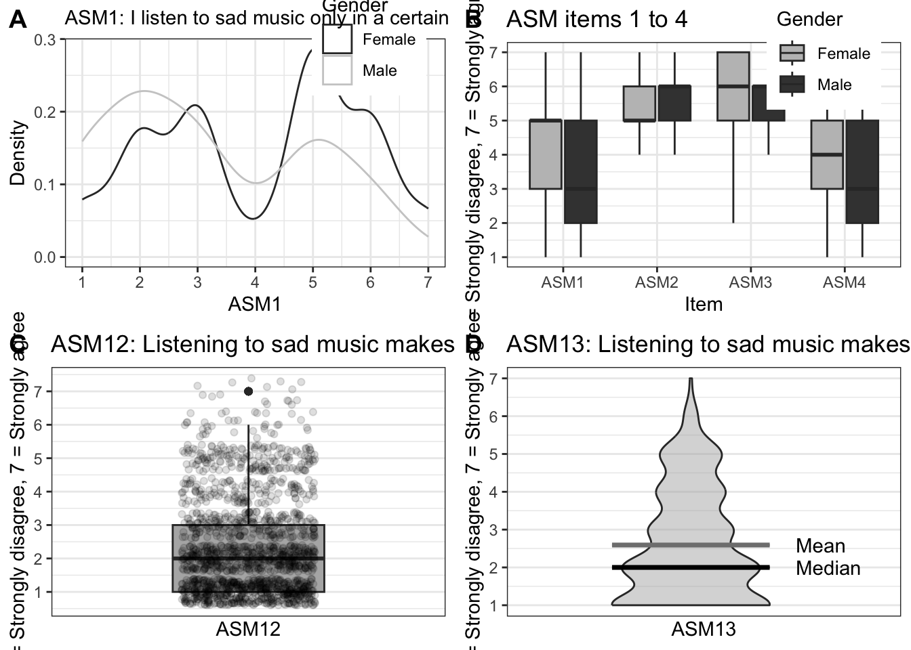

library(tidyverse,quiet=TRUE)
library(ggplot2,quiet=TRUE)
#install.packages("cowplot",quiet=TRUE)
library(cowplot,quiet=TRUE)
options(repr.plot.width = 7, repr.plot.height = 5)Ch. 6 – Diagnostics
This notebook demonstrates Data Diagnostics and Summaries.
Preliminaries
Load or install the necessary R packages.
if (!require(devtools)) install.packages("devtools",quiet=TRUE)
devtools::install_github("tuomaseerola/MusicScienceData@main",quiet=TRUE)
library(MusicScienceData,quiet=TRUE)Code 6.1
print(MusicScienceData::sadness[1:4,1:7])# A tibble: 4 × 7
subj age gender listen expert listensad ASM1
<fct> <fct> <fct> <fct> <chr> <fct> <int>
1 1 35 to 44 Female d MusicL Sometimes 6
2 2 45 to 54 Female mult./d MusicL Often 2
3 3 18 to 24 Female d NM Sometimes 6
4 4 25 to 34 Male d Amat. Sometimes 5Code 6.2
print(MusicScienceData::priming[1:3,1:6])# A tibble: 3 × 6
Participant Prime_V Target_V RT Correct Age
<fct> <fct> <fct> <int> <fct> <int>
1 1 Positive Negative 444 Correct 24
2 1 Positive Negative 437 Correct 24
3 1 Negative Negative 453 Correct 24Code 6.3
Figure 6.1. A histogram showing the distribution of responses to a particular question (no. 25) in Attitudes towards Sad Music (ASM) instrument.
sadness <- MusicScienceData::sadness
g1 <- sadness %>%
drop_na(ASM25) %>% # drop missing values
ggplot(aes(x = ASM25))+
geom_histogram(bins=7,fill="grey50", colour='black')+
scale_x_continuous(breaks = seq(1,7,by=1))+
ylab('Count')+
xlab('1 = Strongly disagree, 7 = Strongly agree')+
theme_MusicScience()
g1Code 6.5
Figure 6.4. A box plot showing the distribution of responses to a particular question (no. 23) in Attitudes towards Sad Music (ASM) instrument split across gender.
g5 <- sadness %>%
drop_na(ASM25) %>% # drop missing values
ggplot(aes(y = ASM25,fill=gender))+
geom_boxplot()+
scale_y_continuous(breaks = seq(1,7,by=1))+
scale_x_discrete()+
scale_fill_grey(start = .4,end = .8,name='Gender')+
ylab('1 = Strongly disagree, 7 = Strongly agree')+
theme_MusicScience()
print(g5)Code 6.6
Figure 6.5. Alternative visualisations of data. A: density plot across gender, B: multiple boxplots, C: boxplot overlaid with original data, D: violin plot with mean and median overlaid.
options(repr.plot.width = 12, repr.plot.height = 10)
d <- MusicScienceData::priming
g1<-ggplot(d,aes(x=RT))+
geom_histogram(binwidth=100,colour='grey50',fill='white')+
ggtitle('Bin width 100')+
ylab('Count')+
xlab('Reaction time (ms)')+
scale_x_continuous(breaks=seq(0,2000,by=400))+
theme_MusicScience()
g2<-ggplot(d,aes(x=RT))+
geom_histogram(binwidth=10,colour='grey50',fill='white')+
ggtitle('Bin width 10')+
ylab('Count')+
xlab('Reaction time (ms)')+
scale_x_continuous(breaks=seq(0,2000,by=400))+
theme_MusicScience()
g3<-ggplot(dplyr::filter(d,RT>200 & RT<1500),aes(x=RT))+
geom_histogram(binwidth=10,colour='grey50',fill='white')+
ggtitle('Bin width 10 with trimming')+
ylab('Count')+
xlab('Reaction time (ms)')+
scale_x_continuous(breaks=seq(200,1500,by=200),limits = c(0,2000))+
geom_vline(xintercept = c(200,1500),linetype='dashed')+
theme_MusicScience()
g4<-ggplot(dplyr::filter(d,RT>200 & RT<1500),aes(x=RT))+
geom_histogram(binwidth=10,colour='grey50',fill='white')+
geom_density(aes(y=10 * after_stat(count)),alpha=0.5,colour='black',fill=NA)+
ggtitle('Bin width 10 density with trimming')+
ylab('Count')+
xlab('Reaction time (ms)')+
scale_x_continuous(breaks=seq(200,1500,by=200))+
theme_MusicScience()
G1 <- plot_grid(g1, g2, g3, g4, nrow = 2)
print(G1)Code 6.7
Table 6.1: The means of the ASM question 20 across the age.
library(Hmisc,quietly = TRUE)
table1 <- MusicScienceData::sadness %>%
drop_na(ASM20) %>% # drop missing values
group_by(age) %>%
summarise(n=n(),mean_cl_normal(ASM20))
colnames(table1) <- c('Age','N','M','95% CI LL','95% CI UL')
knitr::kable(table1,digits = 2, format='simple',
caption = 'The means of the ASM question 20 across the age.')| Age | N | M | 95% CI LL | 95% CI UL |
|---|---|---|---|---|
| 18 to 24 | 355 | 4.51 | 4.38 | 4.64 |
| 25 to 34 | 497 | 4.64 | 4.52 | 4.76 |
| 35 to 44 | 329 | 4.74 | 4.60 | 4.88 |
| 45 to 54 | 213 | 4.75 | 4.55 | 4.95 |
| 55 to 64 | 136 | 5.00 | 4.77 | 5.23 |
| 65 to 74 | 40 | 4.92 | 4.50 | 5.35 |
Code 6.8
mean(MusicScienceData::sadness$ASM20, na.rm=TRUE) # Mean (ignore missing values)[1] 4.684076sd(MusicScienceData::sadness$ASM20,na.rm=TRUE)[1] 1.34759Code 6.9
Figure 6.6. A bar graph showing the means of the responses to the question no. 20 in Attitudes towards Sad Music (ASM) instrument across gender.
g6 <- sadness %>%
drop_na(ASM20) %>% # drop missing values
group_by(gender) %>%
summarise(mean= mean(ASM20),ci = mean_cl_normal(ASM20)) %>%
ggplot(aes(x = gender,y = mean,fill=gender))+
geom_col(colour='black',show.legend = FALSE)+
geom_errorbar(aes(ymin=ci$ymin,ymax=ci$ymax),width=0.5)+
scale_y_continuous(breaks = seq(1,7,by=1), expand = c(0,0))+
scale_fill_grey(start=.25,end=.75)+
coord_cartesian(ylim = c(1, 7)) +
ylab('Mean ± 95% CI')+
xlab('Gender')+
theme_MusicScience()
print(g6)Code 6.10
Figure 6.7. A bar graph showing the means of the responses to the question no. 6 in Attitudes towards Sad Music (ASM) instrument across musical expertise.
g1 <- MusicScienceData::sadness %>%
drop_na(ASM1) %>% # drop missing values
ggplot(aes(x= ASM1,color=gender))+
geom_density(adjust=1.25)+
scale_color_grey(name='Gender')+
scale_x_continuous(breaks = seq(1,7,by=1))+
ggtitle(sadness_ASM_labels[1])+
ylab('Density')+
theme_bw()+
theme(legend.justification=c(1,0), legend.position=c(0.95,0.75))+
theme(plot.title = element_text(size=11))
tmp<-as_tibble(MusicScienceData::sadness)
tmp2<-tmp[,c(3,7:10)]
dfl <- pivot_longer(tmp2,cols = c(2:5))
g2 <- dfl %>%
drop_na(value) %>% # drop missing values
ggplot(aes(x=name,y = value,fill=gender))+
geom_boxplot(outlier.shape ="")+
scale_y_continuous(breaks = seq(1,7,by=1))+
scale_x_discrete()+
scale_fill_grey(start = .75, end=.25, name="Gender")+
ggtitle('ASM items 1 to 4')+
ylab('1 = Strongly disagree, 7 = Strongly agree')+
xlab('Item')+
theme_bw()+
theme(legend.justification=c(1,0), legend.position=c(0.95,0.70))
g3 <- MusicScienceData::sadness %>%
drop_na(ASM12) %>% # drop missing values
ggplot(aes(x=1,y = ASM12))+
geom_boxplot(fill='gray70')+
geom_jitter(alpha=0.13,colour='black', width = 0.33)+
scale_y_continuous(breaks = seq(1,7,by=1))+
scale_x_discrete()+
ggtitle(sadness_ASM_labels[12])+
ylab('1 = Strongly disagree, 7 = Strongly agree')+
xlab('ASM12')+
theme_bw()
g4 <- MusicScienceData::sadness %>%
drop_na(ASM13) %>% # drop missing values
ggplot(aes(x=1,y = ASM13))+
geom_violin(fill='grey70',adjust=1.2,alpha=0.50)+
scale_y_continuous(breaks = seq(1,7,by=1))+
scale_x_discrete()+
stat_summary(fun = median, fun.min = median, fun.max = median,
geom = "crossbar", width = 0.9)+
stat_summary(fun = mean, fun.min = mean, fun.max = mean,
geom = "crossbar", width = 0.9,colour='gray50')+
ggtitle(sadness_ASM_labels[13])+
annotate("text",x=1.6,y=mean(MusicScienceData::sadness$ASM13,na.rm = TRUE),label='Mean',hjust=0)+
annotate("text",x=1.6,y=median(MusicScienceData::sadness$ASM13,na.rm = TRUE),label='Median',hjust=0)+
ylab('1 = Strongly disagree, 7 = Strongly agree')+
xlab('ASM13')+
theme_bw()
G2 <- plot_grid(g1,g2,g3,g4,labels = c("A", "B", "C", "D"),ncol = 2, nrow = 2)
print(G2)
Code 6.11
Figure 6.8. A scatterplot showing the means of the ratings to 110 film soundtrack excerpts using scales tension and valence in Eerola and Vuoskoski (2011).
g9 <- ggplot(soundtrack) +
aes(x = Valence, y = Tension, colour = TARGET_EMOTION,
label=Number,
shape= TARGET_FRAMEWORK) +
geom_point(size=4,alpha=0.80,show.legend=FALSE) +
coord_fixed(ratio = 1)+
geom_smooth(aes(shape = NULL,colour=NULL),method="lm",
formula='y ~x',se=FALSE, fullrange=TRUE,
level=0.95, colour='grey50', # adds trendline
linetype='dashed',show.legend = FALSE)+
geom_text(show.legend=FALSE,color='white',size=1.7)+ # labels
scale_colour_grey(name='Emotion',start = .6,end = 0)+
scale_shape(name='Framework')+
scale_x_continuous(breaks=seq(1,9,by=2),limits=c(1,9))+
scale_y_continuous(breaks=seq(1,9,by=2),limits=c(1,9))+
theme_MusicScience()
print(g9)References
Eerola, T., & Peltola, H.-R. (2016). Memorable experiences with sad music - reasons, reactions and mechanisms of three types of experiences. PloS ONE, 11(6), e0157444. https://doi.org/http://dx.doi.org/10.1371/journal.pone.0157444
Eerola, T., & Vuoskoski, J. K. (2011). A comparison of the discrete and dimensional models of emotion in music. Psychology of Music, 39(1), 18–49.